Ogni contributo verifica fonti primarie e indica cosa cambia per il destinatario. Mai marketing, mai pareri travestiti.
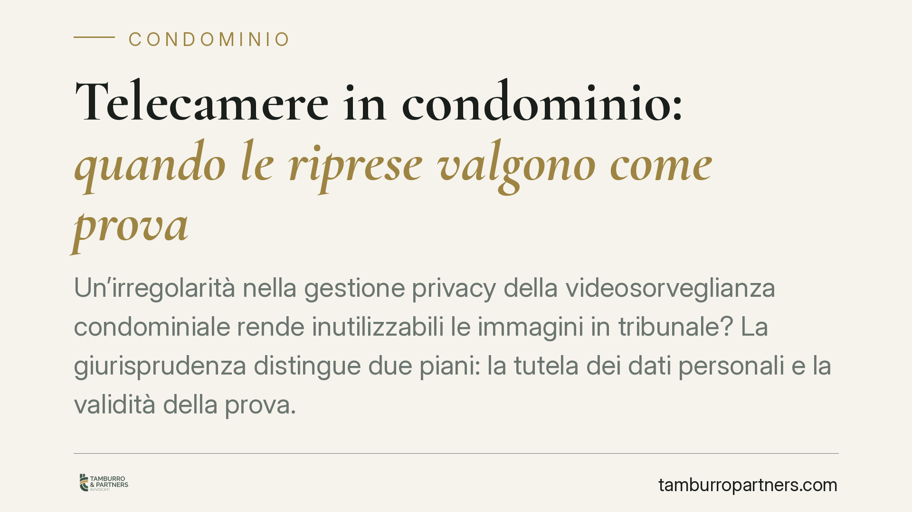
Un'irregolarità nella gestione privacy della videosorveglianza condominiale rende inutilizzabili le immagini in tribunale? La giurisprudenza distingue due piani: la tutela dei dati…
Si torna a discutere se un avvocato possa assumere l'incarico di amministratore di condominio. Il tema riemerge a fronte di un'ipotesi di legge delega ancora da confermare e non op…
La Cassazione torna sul tema delle parti comuni e stabilisce che recintare il portico condominiale non è sempre un'innovazione. Se l'intervento non altera la destinazione originari…
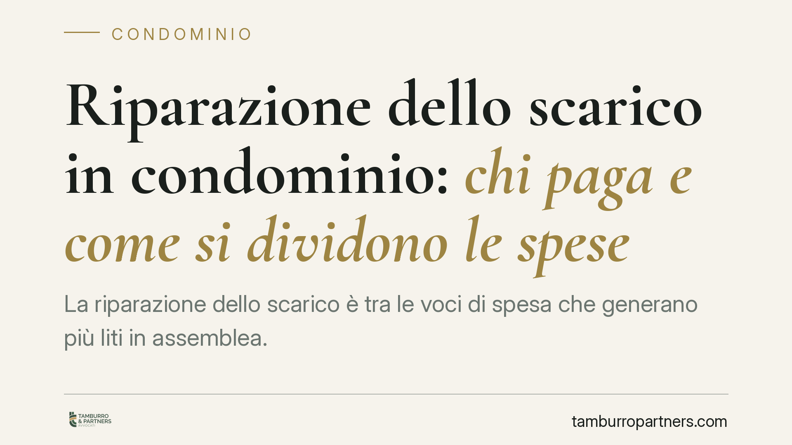
La riparazione dello scarico è tra le voci di spesa che generano più liti in assemblea. Secondo l'orientamento consolidato della giurisprudenza di legittimità, il costo va ripartit…
Il lavoratore che rivendica il pagamento dello straordinario deve dimostrarlo, e non basta un'affermazione generica. Una recente sentenza del Tribunale di Campobasso torna a ribadi…
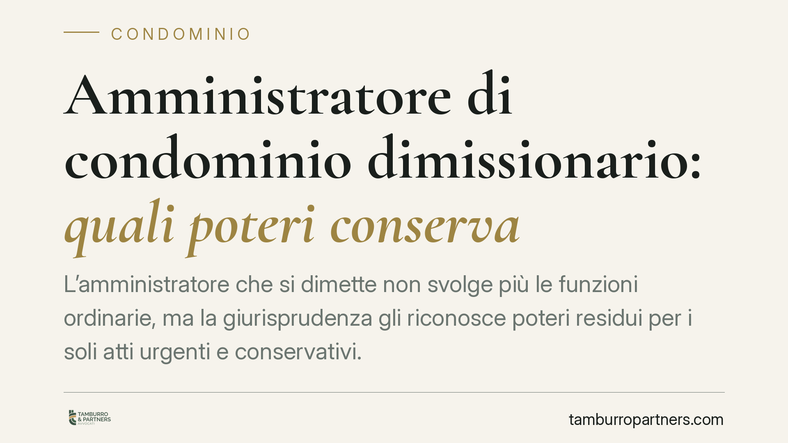
L'amministratore che si dimette non svolge più le funzioni ordinarie, ma la giurisprudenza gli riconosce poteri residui per i soli atti urgenti e conservativi. Gli atti ordinari co…
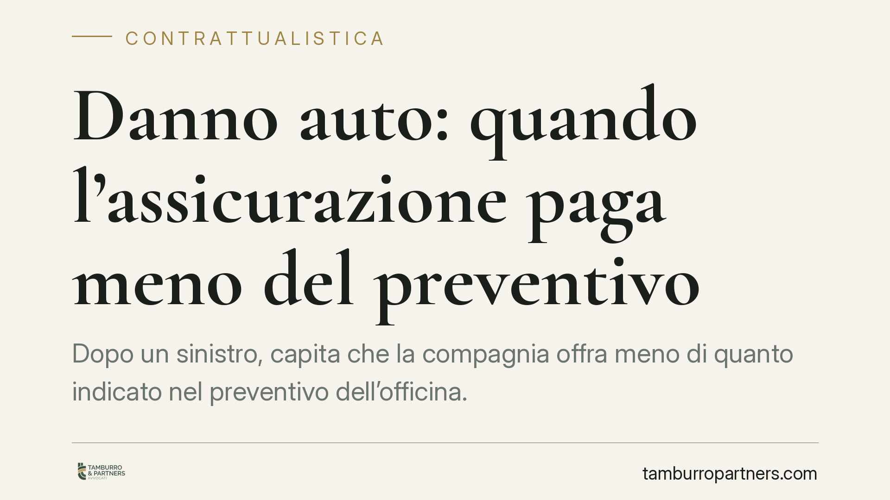
Dopo un sinistro, capita che la compagnia offra meno di quanto indicato nel preventivo dell'officina. Non è sempre un abuso: quando il costo della riparazione supera il valore dell…
Cambiare le finestre del proprio appartamento è un intervento sulla proprietà esclusiva e, di regola, non richiede l'autorizzazione dell'assemblea condominiale. Attenzione, però: g…
Il demansionamento, cioè l'assegnazione a mansioni inferiori rispetto a quelle contrattuali, può fondare un diritto al risarcimento. La Cassazione ribadisce che il danno non è auto…
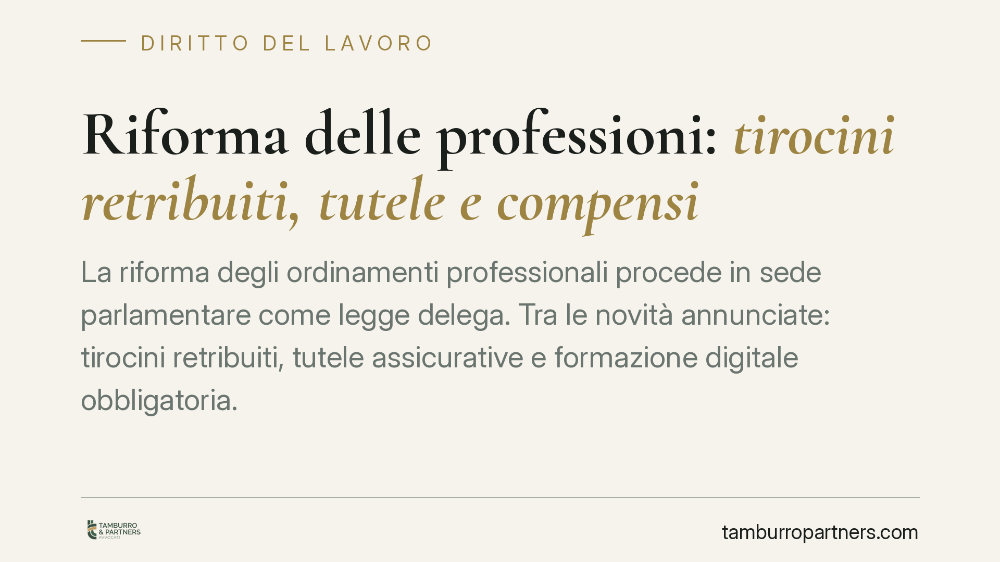
La riforma degli ordinamenti professionali procede in sede parlamentare come legge delega. Tra le novità annunciate: tirocini retribuiti, tutele assicurative e formazione digitale …
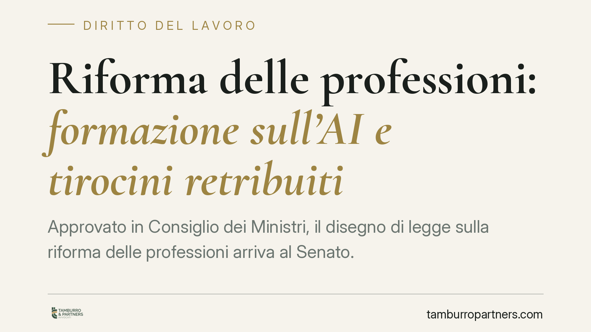
Approvato in Consiglio dei Ministri, il disegno di legge sulla riforma delle professioni arriva al Senato. Due i punti che toccano da vicino il rapporto tra praticanti e studi: l'i…
La Cassazione Penale torna sui rapporti tra infortuni sul lavoro e responsabilità dell'ente ex D.Lgs. 231/2001. Nessun automatismo: la condanna del datore di lavoro non basta a san…
In una compravendita, la garanzia per i vizi non si perde solo perché il difetto era in qualche modo percepibile. La giurisprudenza di legittimità distingue tra la manifestazione v…
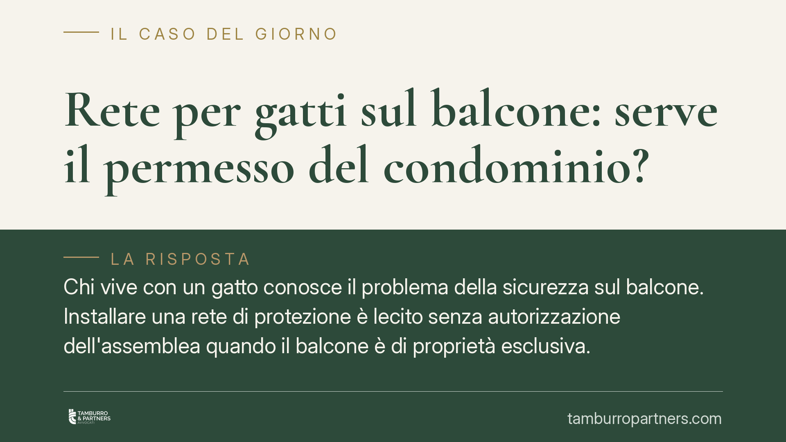
Chi vive con un gatto conosce il problema della sicurezza sul balcone. Installare una rete di protezione è lecito senza autorizzazione dell'assemblea quando il balcone è di proprie…
La Camera ha approvato il cosiddetto decreto sport, che secondo le prime letture ridurrebbe in modo drastico la dotazione del Fondo Dote famiglia. Un intervento che tocca da vicino…
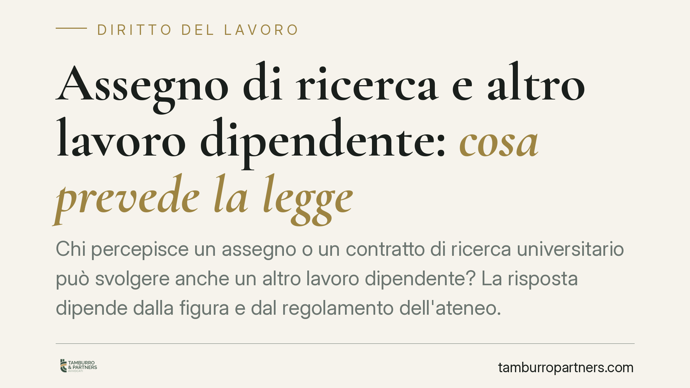
Chi percepisce un assegno o un contratto di ricerca universitario può svolgere anche un altro lavoro dipendente? La risposta dipende dalla figura e dal regolamento dell'ateneo. Il …
Le spese energia ascensore in condominio generano contenzioso ricorrente. Il criterio metà millesimi / metà altezza del piano è quello classico per la manutenzione, ma la sua esten…
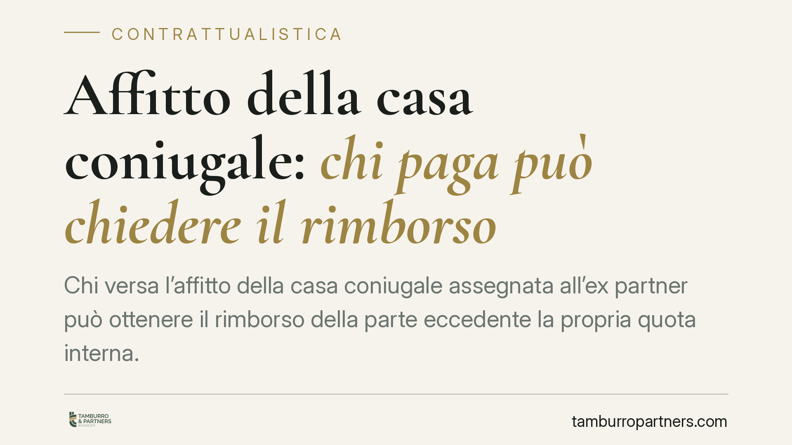
Chi versa l'affitto della casa coniugale assegnata all'ex partner può ottenere il rimborso della parte eccedente la propria quota interna. Il principio, ricorrente nella giurisprud…
Il tema torna ciclicamente nelle assemblee: di fronte a un condomino che non paga, si può interrompere l'erogazione idrica? La risposta non è netta. La sospensione può essere ammes…
Le ondate di calore estivo pongono un problema concreto ai datori di lavoro nei settori esposti: sospendere l'attività senza strumenti di sostegno al reddito. Si discute di una cas…
Molti contratti di locazione contengono clausole che vietano all'inquilino di ospitare terzi. La domanda ricorrente è se abbiano valore. In linea di massima no: l'inquilino può ric…
Quando una malattia si ripresenta, la compagnia può negare l'indennizzo invocando la clausola di esclusione delle recidive. La giurisprudenza chiarisce che spetta all'assicurato di…
Torna il tema delle definizioni agevolate dei carichi affidati alla riscossione, con l'ipotesi di una nuova rottamazione. Per gli enti del Terzo settore la questione non è solo fis…
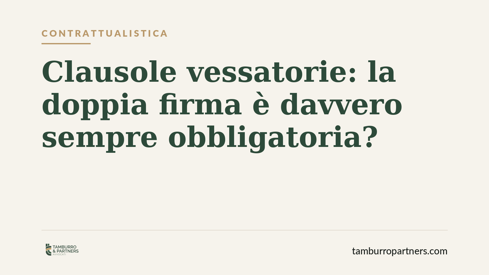
Molte imprese credono che ogni clausola sfavorevole vada firmata due volte, pena la nullità. Non è così. La doppia sottoscrizione prevista dall'art. 1341, comma 2, del Codice civil…
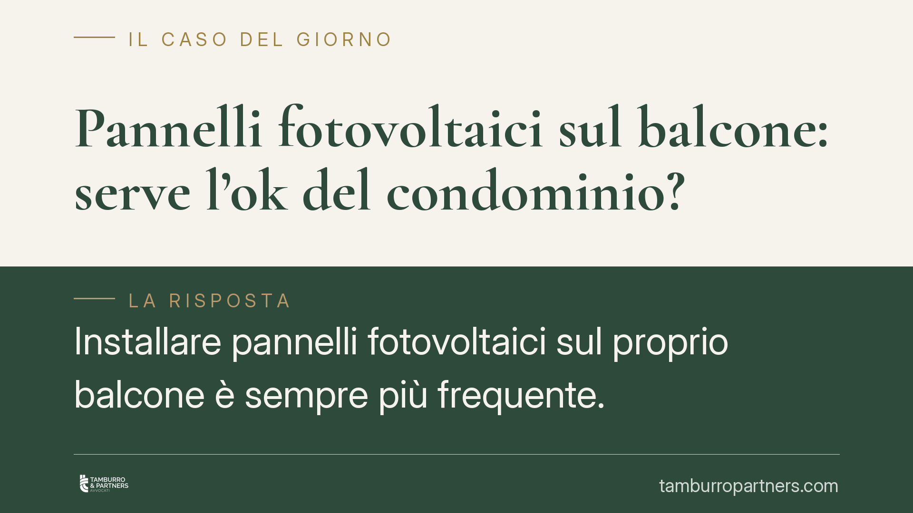
Installare pannelli fotovoltaici sul proprio balcone è sempre più frequente. La regola generale è che, se l'impianto insiste solo su una parte di proprietà esclusiva e non interfer…
La Corte costituzionale torna sul rapporto tra IRAP e attività professionale svolta in forma associata. Il tributo non è dovuto per il solo fatto di operare in associazione: serve …
Chi avvia un'attività artigianale o commerciale come titolare, socio o familiare che collabora deve iscriversi alla Gestione autonomi INPS. L'obbligo scatta a prescindere dal reddi…
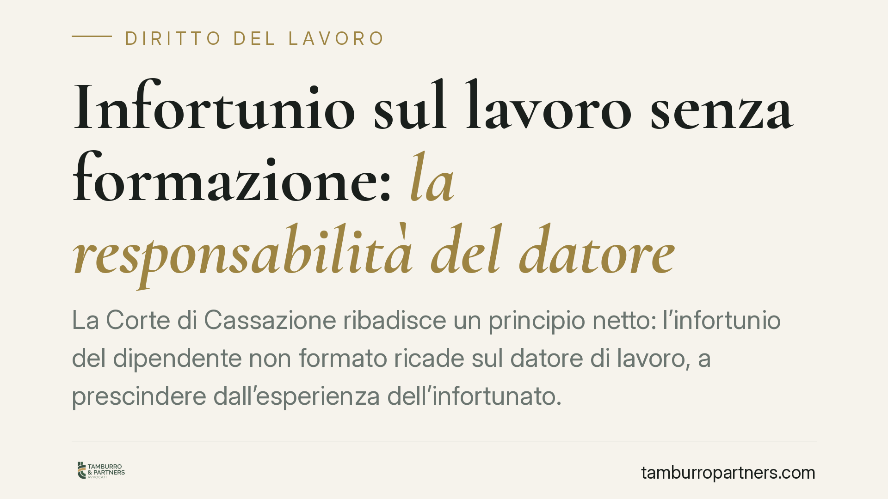
La Corte di Cassazione ribadisce un principio consolidato: il datore di lavoro risponde dell'infortunio del dipendente quando la formazione obbligatoria è mancata o inadeguata, a p…
Un contagio virale che porta al decesso può attivare la polizza infortuni sottoscritta anni prima? La risposta, sul piano contrattuale privato, è spesso negativa. La definizione di…
Alzare la bandiera rossa non autorizza il bagnino ad abbandonare la postazione. La giurisprudenza è netta: l'obbligo di vigilanza è continuativo e non delegabile a un segnale visiv…